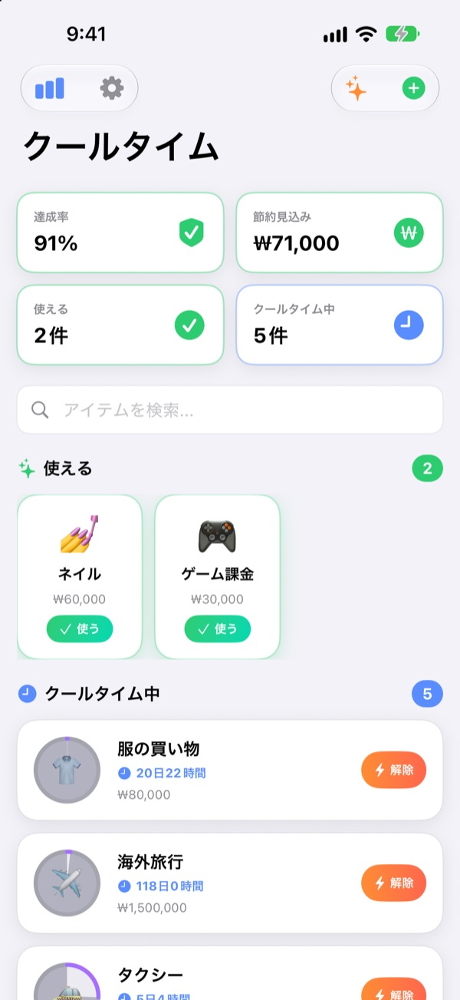
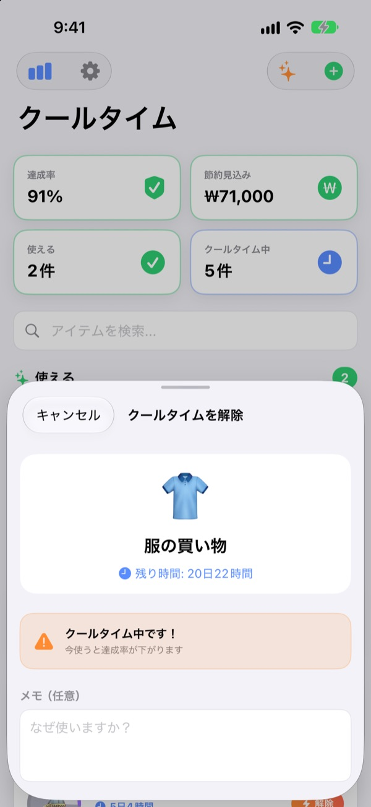
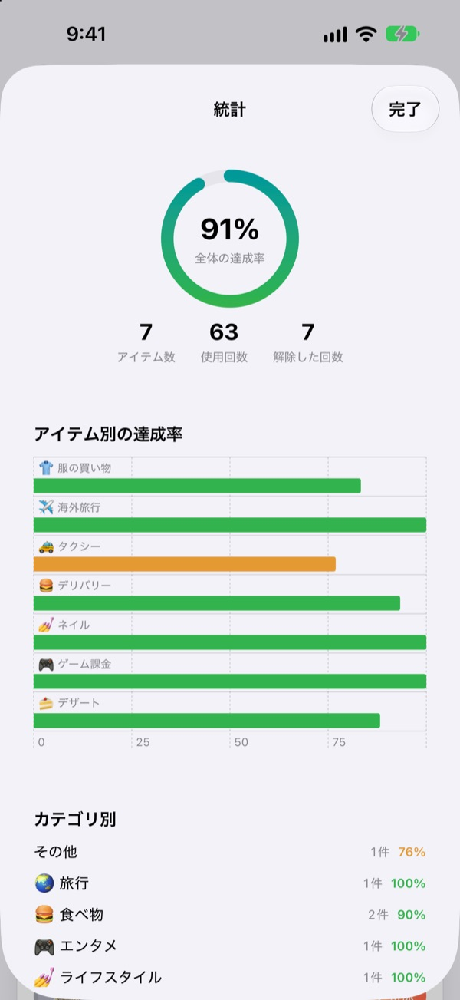
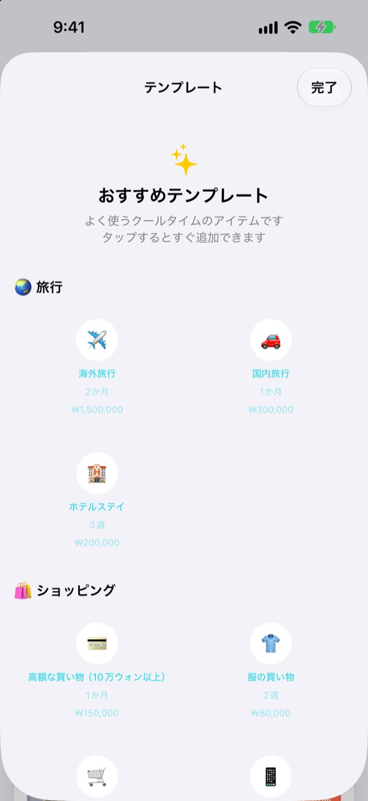

買いたくなったら
まずクールタイム
ゲームのスキルのように、出費にも待ち時間をかけましょう。使うと円が空になり、また使ってよいときまでゆっくり満ちていきます。
すべての機能が無料。アカウント登録も広告もありません。

ここで試せます
アイテムを選んで「使う」を押し、1日ずつ時間を進めてみてください。クールタイム中に使うとどうなるかも確かめられます。
「今回だけ」が1週間に4回。そんなこと、ありませんか？
デリバリーアプリを開くたびに「久しぶりだし」と思うのに、前回がいつだったかは意外と覚えていないものです。クールタイムは最後に使った日と、次に使ってよい日を表示します。我慢するかどうかを、その場の気分ではなく、先に決めたルールで選べるようになります。
解除する前に、もうひと呼吸
クールタイム中に使おうとすると、残り時間とあわせて達成率が下がることを知らせます。
それでも使うなら、理由のメモと実際の金額を残せます。解除した記録もそのまま残ります。

我慢した分が数字でわかる
クールタイムを守れた割合を示す達成率、アイテム別・カテゴリ別の記録、解除した回数をひとつの画面で確認できます。
予想金額を入れたアイテムは、今月どれだけ節約できたかの見込み額も表示します。

定番のクールタイムはワンタップで
旅行、ショッピング、食べ物から健康、金融まで、おすすめテンプレートから選んですぐに追加できます。
クールタイムが半分過ぎたときと終わったときに通知が届き、ホーム画面とロック画面のウィジェットで残り時間をすぐに確認できます。

3ステップで始められます
- 1
アイテムを作る
名前と絵文字、待つ期間（時間・日・週・か月）を決めます。おすすめテンプレートから選ぶこともできます。
- 2
使ったら「使う」を押す
その瞬間からクールタイムが始まり、円が空になります。
- 3
通知が来たら、また使える
終わると通知でお知らせします。最初に一度だけ通知を許可してください。
おすすめテンプレートのクールタイム
- 🌏 旅行
- 海外旅行・国内旅行・ホテルステイ
- 🛍️ ショッピング
- 服の買い物・衝動買い・家電・ガジェット
- 🍔 食べ物
- ファストフード・デリバリー・カフェ・デザート・外食・夜食
- 🎮 エンタメ
- ゲーム課金・映画館・一気見・コンサート・ライブ
- 💅 ライフスタイル
- お酒・タクシー・ネイル・美容室・マッサージ・スパ
- 🏃 健康
- 休息の日（運動をお休み）・チートデイ
- 💰 お金
- 株の売買・宝くじ
テンプレートには、ちょうどよい周期と予想金額があらかじめ入っています。ほしいものがなければ、自分で作れます。
よくある質問
クールタイム中に使ってしまいました。
大丈夫です。使用記録にはクールタイム中に使ったことが残り、クールタイムはその時点から再スタートします。統計の達成率と解除した回数にも反映されます。
節約額はどうやって計算していますか？
アイテムに予想金額を入れておくと、今月クールタイムのおかげで使わずに済んだ回数を見積もり、その金額を表示します。正確な金額ではなく見込み額で、予想金額が空欄のアイテムは計算に含まれません。
通知が届きません。
iPhoneの設定 > 通知 > クールタイムで、通知がオンになっているか確認してください。アプリの最初の画面に通知がオフだという案内が出ている場合は、そこにある設定ボタンから直接開けます。
ウィジェットはどうやって追加しますか？
ホーム画面を長押しして左上の＋をタップし、クールタイムを探して追加してください。ロック画面用のウィジェットもあります。今使えるアイテムと残り時間を表示します。
記録を消したいです。
アイテムを削除すると、そのアイテムの記録も一緒に消えます。アプリを削除すると、すべての記録が消えます。記録は端末の中にしかないため、消した記録は元に戻せません。
ほかの端末と同期できますか？
まだできません。記録は今お使いのiPhoneにだけ保存されています。端末間の同期とバックアップは、アプリの設定 > これから作る機能に載っています。
本当に無料ですか？
はい。お金を払わないと使えない機能はありません。気に入っていただけたら設定から開発者にチップを送れますが、送らなくても何も変わりません。
記録がどこかに送られることはありますか？
いいえ。アカウントも広告もなく、クールタイムと使用記録はiPhoneの中にだけ保存されます。開発者に届くのは、匿名の利用統計とエラーレポート、ご自身で送ったフィードバックだけです。詳しくは下のプライバシーポリシーをご覧ください。
不具合を見つけた、ほしい機能がある。
アプリの設定 > サポート > フィードバックを送る、Instagramのダイレクトメッセージ（@lee25_ios）、または下のメールからお気軽にどうぞ。画面が止まってしまった場合は、何をしていたかとiOSのバージョンを添えていただけると、ずっと早く原因を見つけられます。
ご質問やご意見は leeo@kakao.com までお寄せください。